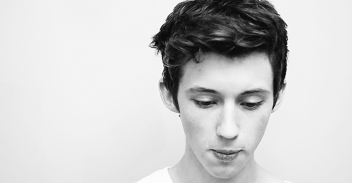
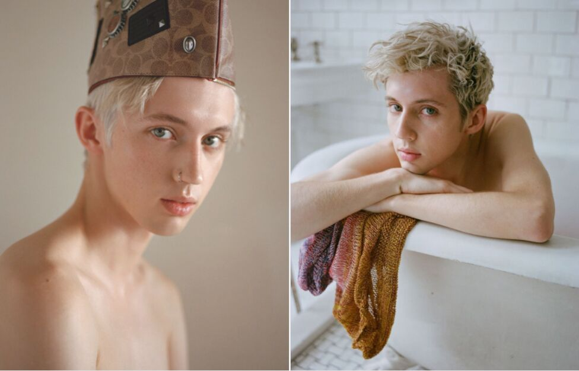
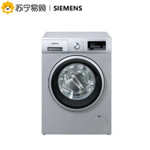
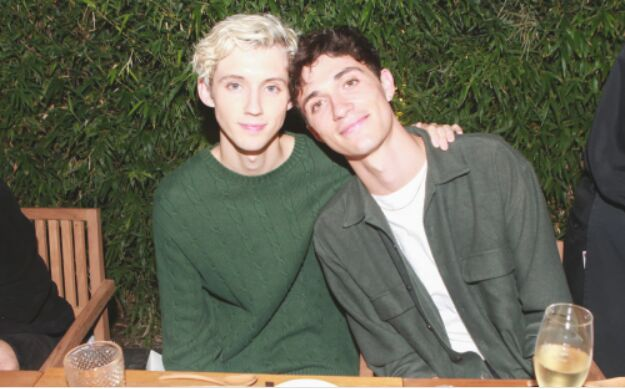
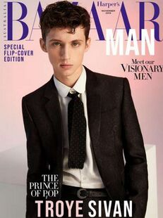
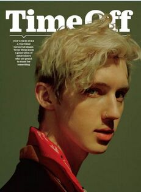
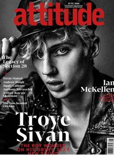
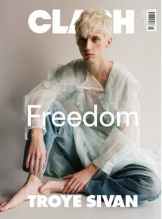

零食便利店《如何挑选心爱的零食...
原创作品-影视-Motion Graphic
2小时前上传
1284 人气/11 评论/47 推荐


电器店X视知《自己喜欢的电器...
原创作品-影视-Motion Graphic
3小时前上传
1569 人气/50 评论/125 推荐
基本信息
中文名 特洛耶·希文
外文名 Troye Sivan
别 名 戳爷、小T、Troye Sivan Mellet
国 籍 澳大利亚
民 族 犹太族
星 座 双子座
血 型 O型
身 高 174cm
体 重 50kg
中文名 特洛耶·希文
外文名 Troye Sivan
别 名 戳爷、小T、Troye Sivan Mellet
国 籍 澳大利亚
民 族 犹太族
星 座 双子座
血 型 O型
身 高 174cm
体 重 50kg
早年经历

特洛耶·希文出生于南非约翰内斯堡。在他两岁时，全家移居至澳大利亚西部珀斯。特洛耶·希文的爸爸是房地产经纪人，出生于一个犹太家庭 [7] 。妈妈是全职家庭主妇，皈依犹太教 [8] 。特洛耶·希文是作为传统的犹太人长大，曾就读于一所犹太学校 [8] 。特洛耶·希文有庆祝犹太安息日 [9] 。2007年，特洛耶·希文开启YouTube自媒体频道，并上传了翻唱《Tell Me Why》的视频，获得大众的关注，一个月时间获得了2.7万订阅数 [10] 。


家电维修Xnice网《爽干系列洗...
原创作品-影视-Motion Graphic
2小时前上传
1284 人气/11 评论/47 推荐

互联网便利店X《香槟意境...
原创作品-影视-Motion Graphic
3小时前上传
1569 人气/50 评论/125 推荐
演艺经历
2007年，特洛耶·希文在里格尔剧院（Regal Theatre）上演的舞台剧《雾都孤儿》里扮演主角Oliver Twist，同年，他参加了澳大利亚的真人秀节目《Star Search》。2008年，参与电影《X战警前传：金刚狼》的拍摄，出演少年时期的詹姆斯·豪利特 [11] 。2009年，发行单曲《For Them》，该曲是一首为世界苦难儿童所唱的歌。同年，翻唱歌曲《an angel》。2010年2月，参与《We Are The World 25 for Haiti》的录制，为海地地震遇难者筹集善款。3月，在南非参与电影《马铃薯》（Spud）的拍摄，在该片中出演男主角 [12] 。
2011年，凭借电影《马铃薯》提名南非电影电视奖“电影长片类最佳男主角奖” [2] 。2012年3月9日，特洛耶·希文参与录制的《天天向上》播出，特洛耶·希文在节目中翻唱了《The One That Got Away》 [13] 。2013年6月5日，签约澳大利亚百代唱片。2014年8月15日，发行个人首张音乐EP《TRXYE》。该EP上架首周，在全球范围内获得55国下载榜冠军；EP单曲《Happy Little Pill》被澳洲认证黄金销量。同年10月，入选《时代》周刊“2014年网络最具有影响力青少年25位”。 [3]
2015年9月4日，发行个人第二张音乐EP《WILD》。10月15日，北美巡演于西雅图启程。12月4日，发行个人首张音乐专辑《Blue Neighbourhood》 [14] 。2016年4月，登上同性杂志《Out》封面。5月，亮相美国公告牌颁奖典礼，并在现场演唱《Youth》 [15] 。2017年5月26日，发行音乐单曲《There For You》 [16] 。8月31日，加盟澳洲男星乔尔·埃哲顿执导的同性题材影片《被抹去的男孩》 [17] 。2018年8月，发行个人第二张音乐专辑《BLOOM》 [6] 。
个人生活
2013年8月7日，特洛耶·希文在YouTube发布视频，公开自己的性取向 [1] 。同时，他得到了父母和亲戚的理解和支持 [3] 。他的同性男友是Jacob Bixenman [18] 。


手机商城《选择自己喜欢的手机...
原创作品-影视-Motion Graphic
2小时前上传
1284 人气/11 评论/47 推荐
从业网X《如何找到合适自己的工作...
原创作品-影视-Motion Graphic
3小时前上传
1569 人气/50 评论/125 推荐
写真记录

《Harper's BAZAAR》
2019年11月
封面人物

《Time Off》
2018年8月
封面人物

《Attitude》
2018年7月刊
封面人物

《Clash》
2018-06
封面人物
社会活动
2006年至2008年，特洛耶·希文连续三年参加了七号电视网珀斯电视募捐活动，并在活动中献唱，所募得资金捐献给珀斯当地的儿童医院、儿童健康研究院和听障中心等机构 [21] 。2013年5月5日，在YouTube频道上发布了原创歌曲《The Fault In Our Stars》，将发售的收入捐献给了珀斯的玛格丽特公主医院基金会作为癌症治疗和研究 [22] 。
贷款X带你网《安全贷款...
原创作品-影视-Motion Graphic
2小时前上传
1284 人气/11 评论/47 推荐
奥利奥X视知《吃奥利奥，奥利...
原创作品-影视-Motion Graphic
3小时前上传
1569 人气/50 评论/125 推荐
获奖记录
- 2017-04 第5届音悦V榜年度盛典：欧美最佳新人奖 （获奖）
- 2016-12 2016澳大利亚唱片业协会音乐奖：年度歌曲奖《Youth》、最佳录影带《Youth》 （获奖）
- 2016-11 2016欧洲音乐大奖：最佳澳大利亚艺人奖 （获奖）
- 2016-01 2016同志媒体奖：杰出音乐人奖《Blue Neighbourhood》 （获奖）
- 2015-10 2015欧洲音乐大奖：最佳新人奖 （获奖）
- 2015-03 2015 YouTube音乐奖：50大热门艺人奖 （获奖）
- 2014-07 2014青少年选择奖 ：网络最佳拍档奖《The 'Boyfriend' Tag》 （获奖）
- 2011 2011南非电影电视奖：电影长片类最佳男主角奖[2] （提名）
- 2017-04 2017同志媒体奖：Stephen F. Kolzak奖 （获奖）
- 2015-03 2015儿童选择奖：最受欢迎澳大利亚/新西兰网络红人奖[4] （获奖）
人物评价
特洛耶·希文的歌唱，能够引起听众情绪上的共鸣，用情至深。（泰勒·斯威夫特评） [3] 特洛耶·希文虽然身体单薄，但是歌唱时镇定自若、发挥稳定。（搜狐网评） [23]
特洛耶·希文通过YOUTUBE开设视频节目，讲各种青少年社会现象、模仿艺人做怪相，犀利又活泼，积攒了大批粉丝。（网易评） [24] 特洛耶·希文也参加了澳大利亚许多综艺节目，得到了越来越多人的关注。（腾讯网评） [1]
写下你对他的印象吧！
在留言区留下对他的赞美吧，激发他的动力做出更好的作品